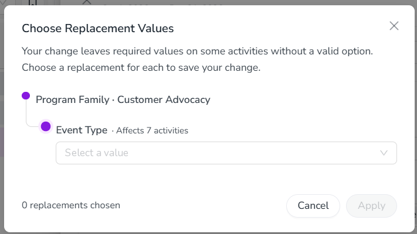
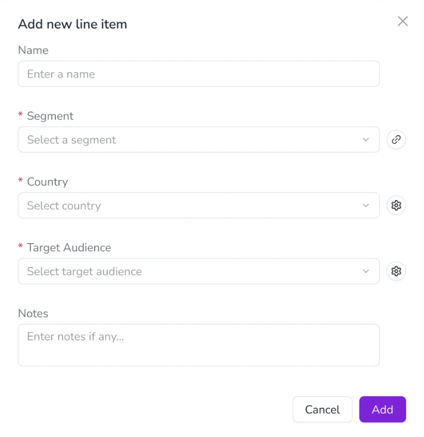

What's new: 2026.10
Discover all the new Uptempo features introduced with the 2026.10 release, available from October 29, 2026.
Announcement: Release schedule update
We're updating our monthly release schedule, moving feature releases from the last Wednesday to the last Thursday of each month to better align with our Engineering team's deployment schedule.
Release notes will continue to be published on Wednesdays, giving customers a day to review upcoming updates before new features go live.
We're also excited to introduce a December release for the first time! This release takes place on the third Thursday of the month to avoid the holiday period.
Upcoming release dates:
October: Thursday, October 29
November: Thursday, November 26
December: Thursday, December 17
Campaign Management: Activity Configuration
Use required attributes in multi-level dependencies
You can now set attributes as required in multi-level attribute dependencies, so marketers enter a value once on a higher-level activity and still get complete, valid data on every activity below it.
Require values anywhere in the dependency: The controlling attribute, the dependent attribute, or both can be required, including in dependency chains that span several levels of the activity hierarchy.
Keep required data valid when plans change: If changing a controlling value leaves required values on lower-level activities without a valid option, Uptempo asks you to choose a replacement for each affected attribute. Your change is saved only after every replacement is chosen. If you cancel, nothing changes.
Add dependencies to existing plans: When admins create or edit a dependency for required attributes on activities that already have values, Uptempo asks them to choose replacements for values that are no longer valid.
Drafts stay flexible: Draft activities aren't included in the replacement step. Complete their required values before you publish them.


Campaign Management: Activities
Save activities as drafts
Activity drafts are now available to all customers. You can save a new activity with just a Name, Activity type, and Parent, then fill in the rest of its details and publish it whenever you're ready. You no longer need every required field complete up front to create an activity.
Start now, finish later: Save an activity as a draft at any point during creation (other than the Budget step, once it's connected to spend), then return anytime to complete its remaining details and publish it.
Required fields stay flexible until you publish: While an activity is a draft, required fields are softly enforced, so you can save without completing them. When you're ready to publish, Uptempo validates the activity and highlights anything still missing.
Tell drafts apart and filter by status: Draft activities show a drafts icon in the hierarchy and an outlined Timeline bar instead of a solid one. Use the Status filter to show only drafts or only published activities.
No spend connections until published: You can enter Estimated Costs on a draft, but you can't connect it to a Line Item or Category/Sub-Category until all required fields are complete and the activity is published.

Group activities by up to three dimensions
Grouping by up to three dimensions is now available to all customers. You can group activities in the activity hierarchy by up to three dimensions at once, including by Activity Type, making it faster to scan large marketing plans without repeated filtering.
See activity types at a glance: Activity Type is available as a Group By dimension, so you no longer need to filter by one type at a time or repeat the type name in every activity's title to tell them apart.
Combine up to three dimensions: Select up to three Group By dimensions at once (for example Activity Type, Industry, and Product Line), and drag to reorder them to control how the resulting groups nest.
See group sizes without expanding: Every group shows a badge with the number of activities directly in it, in both Timeline and Summary display modes.
You can group by up to three dimensions at a time; grouping by more than three isn't supported.

Campaign Management: Activity approvals
Get formal sign-off on marketing activities before they move forward. Admins set up an approval process for the activity types that need one, submitters send activities for approval in a few clicks, and approvers review and decide on requests from a single Approvals page, one at a time or in bulk.
Single-step approval processes
You can now require approval on activities, with a single approval step that any one assigned approver can complete.
Set up approval processes for activity types
Choose which activity types need approval: One process can cover several activity types, and each activity type belongs to only one active process. Only activities whose type is covered by an active process can be submitted for approval.
Decide who approves: Upload a submitter-to-approver mapping (CSV template provided) to route each submitter's requests automatically, or let submitters choose an approver when they submit. Requests from submitters who aren't mapped go to a default admin.
Catch problems before they cause issues: Uptempo blocks mapping files with duplicate submitters and warns you about unknown or inactive users and approvers who can't edit the submitter's activities.
Change processes safely: Edits and deactivations apply only to new requests. Requests already in progress keep their approvers.

Submit activities for approval
Submit with context: Select Submit for Approval on an activity and set an approval deadline. The request description starts with the activity's own description, and you can add more context for your approvers.
Track status on the activity: While the request is pending, the activity shows who it's waiting on and when it's due.
Resubmit after a denial: Each activity has one approval request, and approval is final. If the request is denied, update the activity and resubmit it.
Review and decide on the Approvals page
Find requests fast: Use the Awaiting my review, Pending review, Approved, and Denied tabs, sorted by soonest deadline, with overdue and approaching requests flagged. Search by activity name, submitter, approver, or parent.
Decide with context: Each row shows the activity name, description, activity type, submitter, approvers, deadline, and submission date. Decide on the Approvals page, or directly from an activity's details panel on the Timeline.
Explain your decision: A comment is required when you deny a request, and optional when you approve. Comments are saved on the approval request and shown in its history.
One decision settles it: When several approvers are assigned, the first one to approve or deny settles the request, and the others see who decided.

→ Learn more about setting up activity approval processes
Approve or deny requests in bulk
Approvers who handle large volumes, for example during annual planning, can now decide on many requests in one action instead of opening each one.
Select requests on the page: On Awaiting my review, select individual requests, or use the header checkbox to select every request on the current page (up to 25).
Approve or deny in one step: Select Approve or Deny. A comment is optional when approving and required when denying. The comment is applied to every selected request.
Every decision is still recorded: Each request keeps its own decision and comment in its history, the same as a single decision.
Choose how approvers get approval requests
Admins can now choose how approvers are emailed about approval requests: an email for each new request and/or a daily or weekly digest.
Immediate emails: Approvers get an email with a direct link as soon as a request is submitted for their review.
Daily digest: Approvers get one email a day covering every new request across all approval processes, with the activity name, submitter, and due date. Requests already decided are left out, and no email is sent on days with nothing new.
Weekly digest: Approvers get one email a week showing how many of their open requests are overdue, approaching their deadline, or on track, plus the 10 requests due soonest.
Choose when digests go out: Admins set one send time for the daily digest and one for the weekly digest. Times use the time zone of the admin who sets them, and each digest goes out at that moment for everyone in the organization.
Emails are notifications only. Approve and deny requests on the Approvals page or from the activity's details panel on the Timeline.
Financial Management: Budgets
See Roll-Up Sums for Calculation fields
Calculation fields on the Roll-Up Panel can now show a Roll-Up Sum, so you can see totals across a folder's children without leaving the panel.
Totals across the roll-up: On a folder or sub-folder that has children, a Calculation field shows two lines: the Roll-Up Sum, and the folder's own calculated value. The Roll-Up Sum adds up the Roll-Up Sums of the fields in the formula. For example, if a field is calculated as Q1 + Q2 + Q3 + Q4, its Roll-Up Sum is the total of the four quarters' Roll-Up Sums.
Addition and subtraction only: Roll-Up Sums are available for formulas that use + and -. Formulas that use multiplication or division don't show a Roll-Up Sum.
Items without children: An item that has no children shows one line, the same as before.

Financial Management: Investments
Modernized line item details panel
The modernized line item details panel is now turned on automatically, so you no longer need to opt in.
Faster editing: The panel loads faster and responds more quickly when you view and edit line item attributes.
Metrics above the grid: Metrics no longer appears as a tab in the panel. It now appears in a bar above the budget grid.
Some budgets keep the previous panel: Budgets that use Strategic Targets, Impact Modeler, or Strategic Planning Insights continue to show the previous panel design, which also includes the Strategy and Alignment tabs.

Export Persistent IDs for line items
Exports from the  Investments section now include each line item's Persistent ID, so you can match line items across fiscal years in bulk.
Investments section now include each line item's Persistent ID, so you can match line items across fiscal years in bulk.
See Persistent IDs in bulk: The Persistent ID column is included in Export All fields and Export All fields for Import. Before, you could only see a Persistent ID in the UI, one line item at a time.
Match items when names change: Names can change every fiscal year, but a line item's Persistent ID stays the same, so you can use it to compare line items across hierarchies and years.
For reference only: The column is for reference. Importing a file works exactly as before.
Add line items in a modernized form
The form you use to add a line item to an investment plan has been redesigned to be faster and more responsive.
Faster to use: The form responds more quickly as you fill it in.
A consistent look: The form looks and behaves like the equivalent screens in Campaign Management.
Required fields stand out: Required fields show a red asterisk next to the field name.


Uptempo API
Retrieve Campaign Management audit events through the API
You can now access Campaign Management audit events through the Uptempo API, so you can work with your audit data outside of Uptempo.
Connect audit data to your security tools: Send audit events to your SIEM or monitoring tools, such as Splunk, to support alerting and anomaly detection.
Automate compliance reporting: Pull a record of who changed what, and when, into your own reporting and governance workflows, without exporting data manually or contacting Uptempo Support.
→ Learn more about the Audit Events endpoints in the Uptempo API